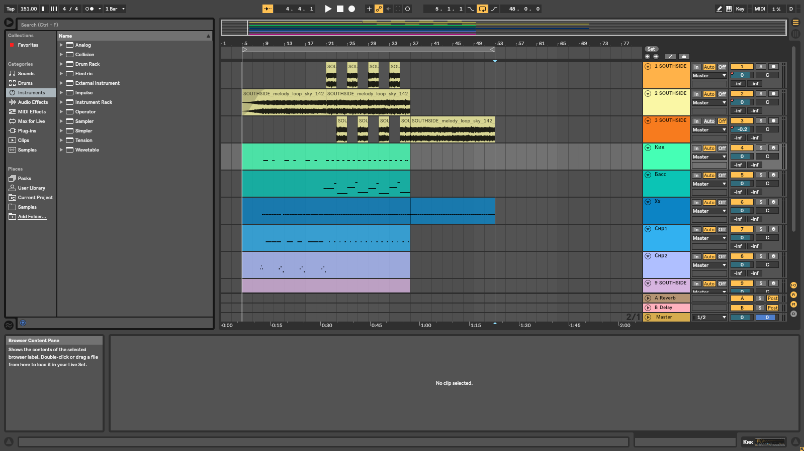

Гришин Вадим Вячеславович
Группа 7281-12

Официальный сайт: https://www.ableton.com/en/live/
Ableton Live — компьютерная программа от фирмы Ableton для музыкантов, используемая как для студийной работы, так и для живой игры. Программа Live 10 от компании Ableton стала причиной целой революции в мире музыкального программного обеспечения, превращая компьютеры в настоящие музыкальные инструменты с возможностью играть на них без ощутимого ущерба для производительности, в отличие от многих цифровых рабочих аудио станций известных ранее.
Программа имеет два режима: «Arrangement View» и «Session View». В режиме «Arrangement» создание композиции происходит путём расстановки музыкальных фрагментов («клипов») на временной шкале (как во многих других секвенсорах, например, Steinberg Cubase, Logic Studio, Cakewalk Sonar). Режим «Session» позволяет воспроизводить клипы в произвольном непрописанном заранее порядке и составлять композицию в режиме реального времени.
Ableton Live широко применяется для диджеинга, живых выступлений, звуковых инсталляций, и вообще практически для любого музыкального действа в студии или на сцене, которое может нарисовать ваше воображение. В отличие от других программ, которые основаны на традиционных "диджейских" подходах и приёмах, Live позволяет артисту создавать полностью настраиваемое под себя программно-аппаратное окружение, которое ограничено только воображением. А уж со сравнительно недавним введением в Live языка визуального программирования Max, Ableton Live получила постоянно растущее сообщество программистов, которые ежедневно создают дополнительные устройства для расширения функциональности этой программы.
Программа доступна в трех вариантах: Intro, Standard и Suite, которые отличаются возможностями и стоимостью. В приведенной сравнительной таблице перечислены основные отличия этих версий.
| Особенности | Intro | Standard | Suite |
| Стоимость | $99 | $449 | $749 |
| Основные функции и режимы | 16 аудио и MIDI дорожки 8 сцен 2 посыла и возврата 4 моно входа 4 моно выхода Capture |
Неограниченное количество Audio и MIDI дорожек Неограниченное количество сцен 12 посылов и возвратов 256 моно входов 256 моно выходов Capture Complex warp Audio-slicing Audio to MIDI |
Неограниченное количество Audio и MIDI дорожек Неограниченное количество сцен 12 посылов и возвратов 256 моно входов 256 моно выходов Capture Complex warp Audio-slicing Audio to MIDI Max for Live |